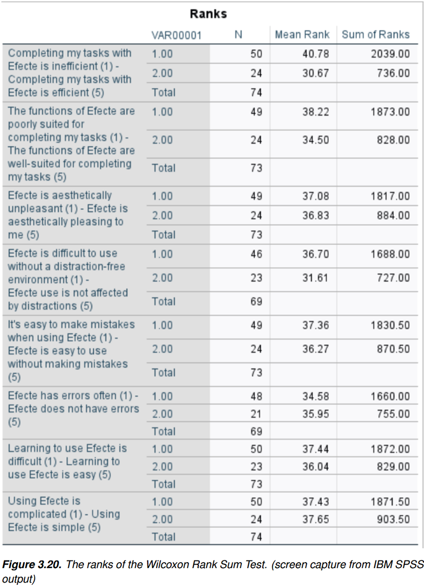
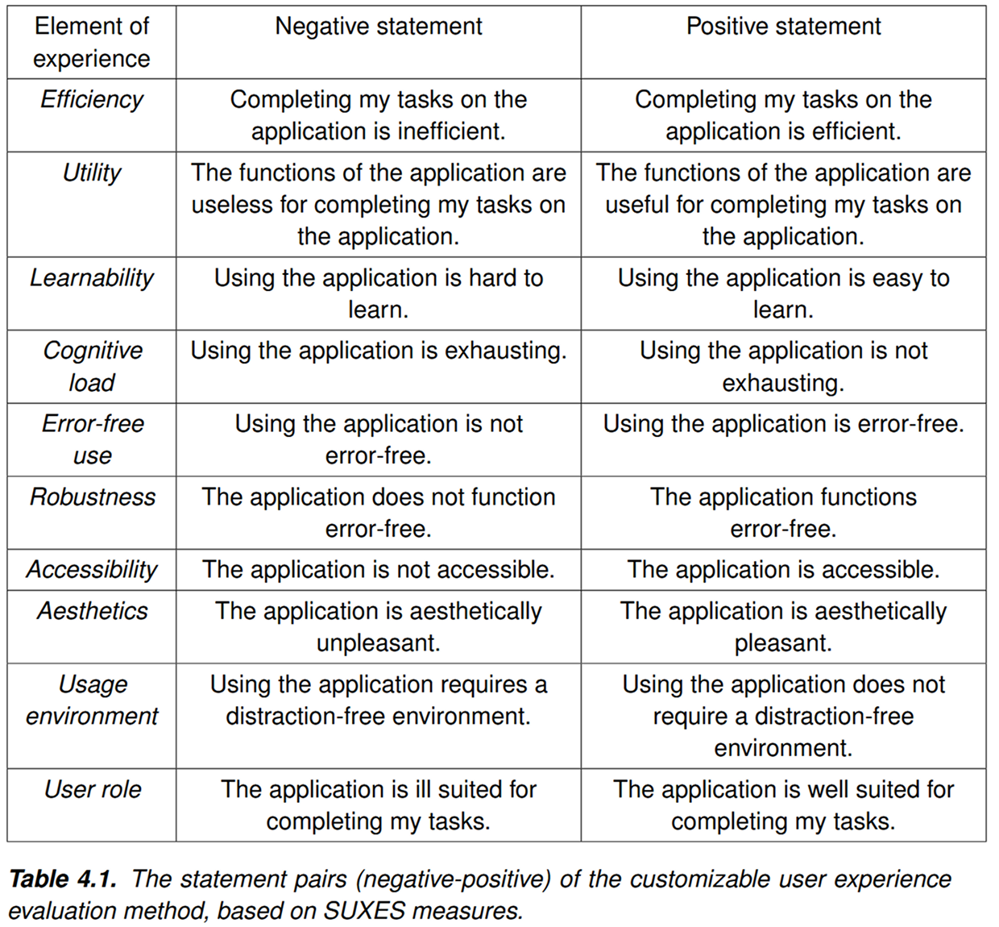
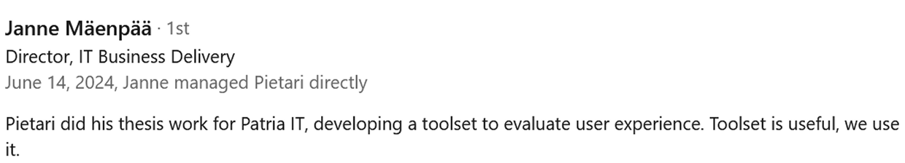

UX Research
Usability scoring toolset
Context
Patria's software catalogue was extensive, which had prompted the IT organization to launch an application landscape rationalization project. I was hired to create a systematic way to evaluate the user experience of those applications, with the results serving as one of the key metrics in deciding whether an application should remain in use.
Problem
Patria's IT organization lacked the expertise to conduct usability evaluations, and the sheer number of applications made such evaluations impractical. The company needed a lightweight yet structured method that could be applied by internal teams without dedicated UX professionals.
Process
I began by gathering a list of requirements for the user experience evaluation method through discussions with stakeholders, including IT leadership and those responsible for the rationalization project. It was important to understand the process they were going to use for the evaluation of individual applications to ensure the method I create would be compatible.
I also did a literature review. With this basis, I was able to construct the method, which I tested using Efecte, an application in internal use, as a case study. The method proved to meet the requirements. After that I worked with the aforementioned stakeholders to incorporate this method into the existing process. Finally, I delivered training sessions to IT staff on its use.

The results of the Efecte case study. The mean ranks are averaged to form a score for each element of experience, on a scale of 0-50. We can see a large disparity between mean ranks in efficiency. From this we can infer that users of Efecte who use it less than daily find it much more inefficient to use than daily users. This can then be interpreted to mean, that Efecte has a high learning curve for efficient use.
Solution
Based on the research I did, I landed on ten elements of experience which the method would measure. The measurement itself builds on the ideas of the SUXES and experimental user experience evaluation methods. The evaluation process results in a score for each element of experience, which are used to calculate the user experience score for the measured application. The solution left open an opportunity to make this evaluation more automated using tools that Patria was in the process of adopting.
You may read more about the process and the solution in this article published in trepo.

Impact
The user experience evaluation method proved to be a useful tool for the IT organisation of Patria, and was used throughout the application landscape rationalisation initiative, as well as part of the procurement process of all new software at Patria.
